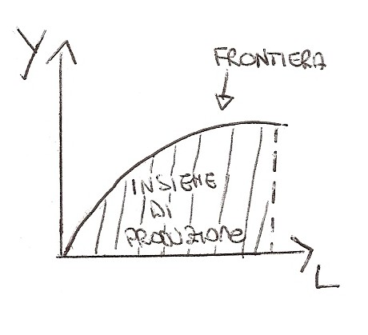
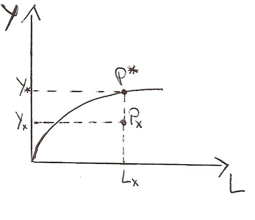
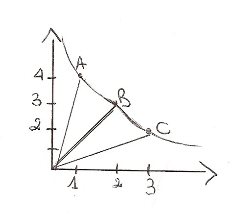

Torna alla pagina di Economia del Cambiamento Tecnologico
:: Economia del Cambiamento Tecnologico ::
Lezione 23/09/2008
I vincoli e la tecnologia
L'impresa nella sua produzione è sottoposta a vincoli che possono favorire o sfavorire l'attività produttiva.
Esistono due tipi di vincoli:
1. VINCOLI ESTERNI:
- clienti/fornitori (domanda/offerta) che possono definire criteri di comportamento in base al tipo di mercato -> sono i soggetti che determinano i prezzi di mercato
- government (lo Stato, il "Governo") che pone dei limiti con le leggi o degli incentivi
- concorrenti effettivi: quelli che offrono prodotti analoghi nel settore in cui opero
- concorrenti potenziali: quelle che cercano di entrare nel mercato
2. VINCOLI INTERNI:
- LA TECNOLOGIA: è un vincolo tecnico che condiziona la capacità dell'impresa di penetrare in un mercato
Per analizzare l'impresa nel tempo si possono utilizzare due approcci:
1. la tecnologia è data, non si modifica nel tempo.
QUESTA DEFINIZIONE NON E' ADATTA alla nostra realtà ma si presta bene allo studio di modelli semplificativi.
2. la tecnologia muta nel tempo dando vita al progresso tecnologico ed economico
Le teorie classiche e neoclassiche prendevano in considerazione il primo approccio.
La tecnologia si caratterizza per INPUT e OUTPUT (sia materiali che immateriali), visti in questi modelli come flussi che nel tempo non mutano.
Come input si considerano il Lavoro (L) e il Capitale (K) come output si considerano quantità fisiche (Y). Per utilizzare questo approccio bisogna partire da 4 ipotesi fondamentali:
- questi flussi sono quantità fisiche
- gli input si ipotizza siano sostituibili (ad esempio posso utilizzare lavoratori italiani o cinesi) e l'output non cambia (beh se uso i cinesi però mi rende di più!
- ogni input è disponibile in una data qualità (non prendo in considerazione diversi tipi qualitativi in questo modello altrimenti si complica)
- la tecnologia si può descrivere con funzioni continue e perfettamente differenziali
Funzione di produzione
Lo strumento usato per descrivere la tecnologia è la Funzione di produzione.
- Definizione economica: "Descrive la tecnologia che è a disposizione di un'impresa in un settore o in un ambito territoriale (cioè in quel territorio)"
Ad esempio parlando di PIL avrò come input L che rappresenterà tutti i lavoratori in Italia, K il capitale totale delle imprese e Y il PIL appunto.
- Definizione analitica: "La funzione di produzione descrive le relazioni tra input disponibili e output"
Y=f(K,L)
Nel breve periodo alcuni fattori non si possono modificare! Questo accade in particolare al capitale, perciò si dice che nel breve periodo la funzione descrive le relazioni dato il K.
- Definizione grafica:
Sull'asse delle ordinate avrò l'output, mentre su quello delle ascisse il lavoro. Il capitale è dato, fisso, considerando perciò il breve periodo.

Dato il capitale posso creare:
- combinazioni produttive tecnicamente possibili (o realizzabili): contenute nell'insieme di produzione
- combinazioni produttive tecnicamente efficienti: punti posti sulla frontiera di produzione. Questi punti descrivono la quantità massima di output che si può ottenere con dati livelli di input disponibili
Facciamo un esempio:

- Px = (K(costante), Lx, Yx) è un esempio di metodo produttivo tecnicamente possibile
- P* = (K(costante), L*, Y*) è un esempio di metodo produttivo tecnicamente efficiente
Notiamo quindi che Yx è MINORE di Y* perchè quest'ultimo si trova sulla frontiera di produzione perciò sfrutta al meglio le risorse.
Questo grafico è la rappresentazione economica dei processi di produzione.
Combinazioni produttive e metodi di produzione
Sono combinazioni di input per ottenere un certo livello di output.
Facciamo degli esempi...
Esempio 1
Siano date tre combinazioni produttive diverse per produrre una unità di output.
B C A
unità di L 2 3 1
unità di K 3 2 4
Le tre combinazioni produttive si possono rappresentare su un grafico e congiungere ottenendo così una curva che rappresenta tutte le possibili combinazioni produttive tecnicamente efficienti per ottenere un dato livello di output. Esse sono tutte equivalenti anche se presentano un'intensita di impiego di fattori produttivi diversa.

Esempio 2
Si considerino due combinazioni produttive G e H entrambe tecnicamente possibili per ottenere 1 unità di output
G H
K 3 3
L 5 7
La combinazione H è meno efficiente perchè utlizzza due unità di lavoro in più per ottenere lo stesso output.
Esercizio - Rappresentare graficamente la funzione di produzione
Terra (ettari) Lavoro (anni-uomo) Y (output - produzione di grano)
1 0 0
1 1 6
1 2 13.5
1 3 21
1 4 28
1 5 34
1 6 38
1 7 38
1 8 37
Dati questi dati rappresentare graficamente la funzione di produzione.
Mi trovo un K costante, perciò avrò una f.ne di produzione di tipo esponenziale.
Torna alla pagina di Economia del Cambiamento Tecnologico